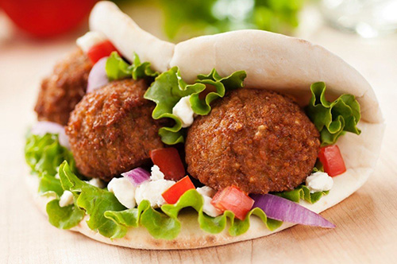
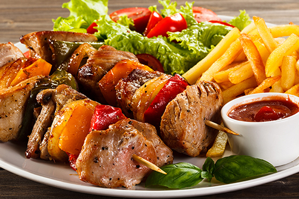
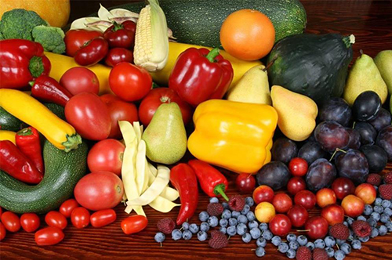

Veganism is both the practice of abstaining from the use of animal products, particularly in diet, and an associated philosophy that rejects the commodity status of animals.

CASHER
When your product or establishment is certified Kosher, shoppers know that you comply with a strict policy of kosher food laws, including cleanliness, purity and quality. But kosher means more than responsible food preparation. Kosher refers to a set of intricate biblical laws that detail the types of food that a Jewish person may eat and the ways in which it may be prepared.

HALAL
Halal simply means permitted or lawful. So when we are talking about halal foods it means any foods that are allowed to be eaten according to Islam.

BIO
Simply stated, organic produce and other ingredients are grown without the use of pesticides, synthetic fertilizers, sewage sludge, genetically modified organisms, or ionizing radiation. Animals that produce meat, poultry, eggs, and dairy products do not take antibiotics or growth hormones.